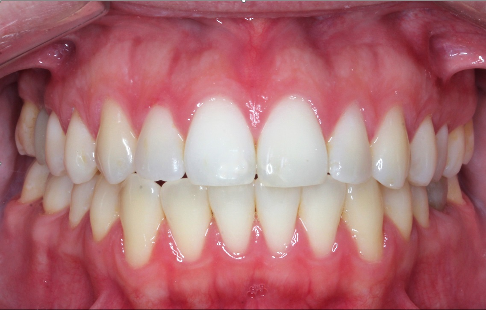
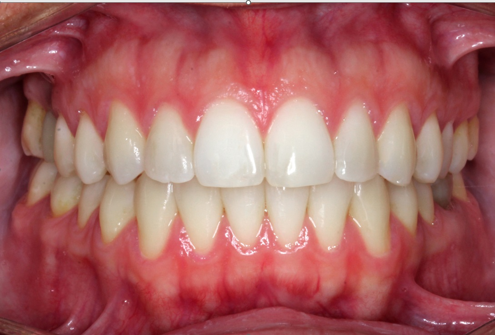

Alineadores invisibles en Buenos Aires: especialistas que se dedican solo a esto
Buenos Aires tiene miles de consultorios odontologicos. Encontrar uno que trabaje exclusivamente con alineadores invisibles es otra historia. Consultorio de Alineadores es un espacio en Palermo dedicado 100% a la ortodoncia con alineadores invisibles.
Respondemos en menos de 1 hora

Que nos hace diferentes en Buenos Aires?
Especializacion total
Somos el consultorio que solo hace alineadores. Eso nos da una profundidad de experiencia que los generalistas no pueden igualar.
Tecnologia KeepSmiling
Marca argentina lider, +17 anos de innovacion, +50.000 sonrisas. Diagnostico con escaneo digital 3D.
4 ortodoncistas especializadas
No es un solo profesional. Somos un equipo dedicado exclusivamente a alineadores.
Financiacion accesible
Planes de pago, cuotas y bonificacion por contado. Que el precio no sea obstaculo.
Pacientes de toda Buenos Aires nos eligen
Estamos en Palermo, con excelente conectividad para que llegues facil desde cualquier punto de la ciudad.
Palermo, Recoleta, Belgrano
A minutos caminando o en subte. Los barrios mas cercanos al consultorio.
Palermo → · Recoleta → · Belgrano →Caballito, Almagro, Villa Crespo
Acceso directo por subte linea D o B. Llegadas en menos de 20 minutos.
Caballito →Centro, Microcentro, San Telmo
Subte linea D sin combinacion. Directo hasta la estacion Scalabrini Ortiz.
Zona Norte (Olivos, Vicente Lopez)
Tren Mitre + subte o colectivo. Muchos pacientes de zona norte nos eligen.
Flores, Liniers, Zona Oeste
Subte linea A + combinacion D. Tambien colectivos directos por Scalabrini Ortiz.
Zona Sur (Avellaneda, Lanus)
Colectivos directos o auto por autopista. Estacionamiento disponible en la zona.
Tu tratamiento en 4 simples pasos
Un proceso claro, personalizado y con acompanamiento profesional en cada etapa.
Evaluacion inicial
Visitas el consultorio para un diagnostico completo con escaneo digital 3D. Te vas con un plan de tratamiento y presupuesto.
Diseno personalizado
Nuestros ortodoncistas disenan tu tratamiento a medida. Ves una simulacion de tu resultado final antes de empezar.
Instalacion en consultorio
Te colocamos los alineadores KeepSmiling en el consultorio. Te explicamos como usarlos y te damos todas las indicaciones.
Sonrisa nueva
Con controles regulares, seguimos tu progreso hasta lograr el resultado perfecto.
Resultados reales de nuestros pacientes
Cada sonrisa es unica. Mira lo que lograron nuestros pacientes con alineadores invisibles.




Cada caso es unico. Los resultados dependen de la complejidad del tratamiento.
"Busque 'alineadores invisibles buenos aires' y me aparecieron decenas de opciones. Lo que me convencio de este consultorio es que es lo unico que hacen. Vivo en Villa Urquiza y el viaje hasta Palermo vale cada minuto."
Donde estamos
Consultorio de Alineadores en Palermo, accesible desde toda Buenos Aires.
Consultorio de Alineadores
Subte
Linea D, estacion Scalabrini Ortiz (3 cuadras). Conexion directa desde toda la linea D.
Colectivos
15, 39, 55, 111, 141, 160 por Av. Scalabrini Ortiz
Auto
Estacionamiento disponible en la zona. Facil acceso desde autopistas.
Horarios
Lunes a viernes con horarios amplios
Horarios de atencion
Tu mejor sonrisa te esta esperando en Buenos Aires
Saca turno para tu evaluacion inicial y empeza el cambio. Te esperamos en nuestro consultorio de Palermo.
Reserva tu evaluacion inicial →Respondemos en menos de 1 hora · Lunes a Viernes